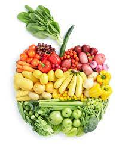

|
Goede voeding zorgt voor genoeg energie en voedingsstoffen voor je lichaam: eiwitten, vetten,
koolhydraten, vitamines, mineralen, vezels en voldoende vocht.
Met goede voeding voel je jezelf fitter. En heb je een kleinere kans op diabetes,
kanker en ziekten van uw hart en bloedvaten, zoals een beroerte of hartaanval.
Eet elke dag veel groente. En eet 2 stuks fruit per dag. Als je niet zo van groente of fruit,
dan kunt zelf sap van groente en fruit persen om dit toch binnen te krijgen.
Eet vooral volkoren producten bijvoorbeeld volkoren brood, volkoren pasta en zilvervliesrijst.
Kies vaker producten met gezonde onverzadigde vetten. Zoals olijfolie, halvarine, vette vis en noten.
Wees zuinig met zout alle voedingsmiddelen bevatten van nature al een beetje zout.
Zout toevoegen is dus niet nodig.
drink vooral zonder suiker en zonder alcohol je gevoel van dorst zorgt er vanzelf voor dat
je genoeg drinkt ongeveer 1,5 liter per dag.
3 maaltijden per dag zijn een goede basis om jw lichaam te voeden met alle voedingsstoffen.
Goede voeding helpt mee om lekker in je vel te zitten en u gezond te voelen.
Maar overdrijf niet, want als je te weing eet kan je bijvoorbeeld anarexia krijgen.
|

|